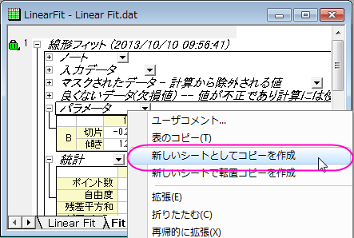
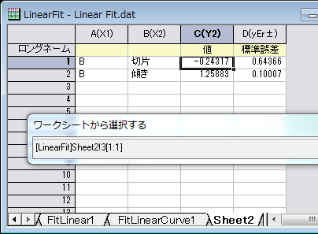
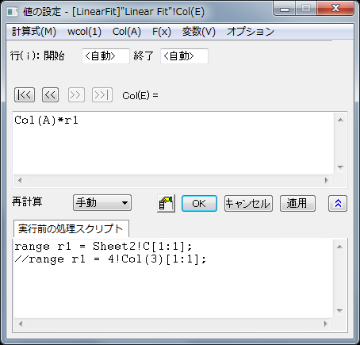

FAQ-498 値の設定ダイアログで分析結果を使用するには、どのようにしたらよいでしょうか？
最終更新日:2015/02/04
use-link-cell-SCV-dlg
Originで分析操作を行うと、階層結果シートにパラメータの値やその他の情報の表を生成します。
このような結果表にある、パラメータの値を列値の設定のダイアログ内で使用するには、
- 結果表のヘッダ（パターメータなど）上で右クリックして、新しいシートとしてコピーを作成を選択し、表の内容を新しいワークシートにコピーします。
- 
- 値の設定を行う列を右クリックし、列値の設定を選択して値の設定ダイアログを開きます。
- 値の設定ダイアログのメニューから、変数：選択から範囲変数を追加を選択し、ワークシートから選択するダイアログを開きます。
- 新しく作成されたシートを開き、切片などの使用したい値のセルをクリックします。
- 
 ボタンをクリックして、選択を確定し、値の設定ダイアログに戻ります。実行前の処理スクリプトパネルに、切片の値のセルを定義した変数 r1が追加されるので、直接式内に変数r1を使用できます。
ボタンをクリックして、選択を確定し、値の設定ダイアログに戻ります。実行前の処理スクリプトパネルに、切片の値のセルを定義した変数 r1が追加されるので、直接式内に変数r1を使用できます。
- 
分析に使用している入力データが変更されても、解析結果と列式は変更を参照して更新されます。
必要なOriginのバージョン:9.1SR0
キーワード: フィット, パラメータ, 式